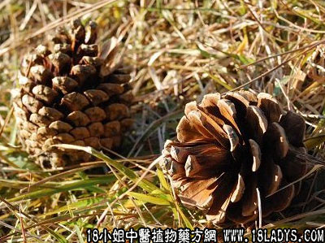

山松子(中药材植物名:马尾松)(植物科目:松科)

别名：松鸡、松毛子。
植物名：马尾松。
生长环境：本品为乔木，山岗到处可见。
分布：广东省及长江以南各省皆有分布。
入药部分：果，以树上未成熟者入药。
采集期：秋季。
自采地点：山岗。
性味：性温、味苦、气香。
功能：祛风。
主治、用量和用法：1、胃痛：干用4至5枚，清水煎服；2、疝气：干用4至6枚，猪瘦肉适量，清水煎服。
附录：（叶）（别名松毛）1、治风湿脚肿痛：生用适量，煎水温熨洗患处。
2、治跌打肿痛：鲜用捣烂，加酒煮热外敷。
3、治皮肤痕痒：生用适量，煎水外洗患处。
验方：（治跌打瘀肿方）松毛1两，大罗伞、小还魂、透骨消、血见愁各5钱，为末，用适量加酒煮热敷患处。
（方解）松毛善祛风活血，配大罗伞散瘀、止痛，小还魂接骨止痛，透骨消散骨络瘀伤，血见愁清热止痛、止血。合为祛风、活血、散瘀、接骨止痛方。
（方歌）跌打瘀肿有松毛，大小还魂罗伞设，血见愁来透骨消，肿消痛止呻吟歇。
（松花散）治远年烂痘、烂肉：在清明时采下，用纸垫晒，使花粉跌落纸上，将此粉掺患处，有生肌止痛之效。
（松香）治皮肤病，并可作膏药原料。
（松寄生）治疝气、劳伤、胃痛、鼓胀，风湿骨痛：用1至3两，清水煎服。
本文解释权归中药大全，本文地址：https://www.daquan.com/post/1531.html